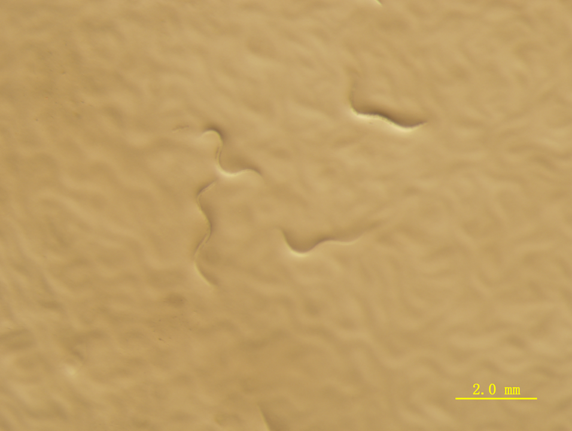

MpL is a novel β-trefoil lectin isolated from parasol mushroom（Macrolepiota procera）, the general function of which is to protect the plants themselves from the predators, such as stopping or even killing the predators. It is also thought to be a survival strategy that the plants have evolved to protect themselves. A specific feature of these defensive fruiting body lectins is their cytoplasmic localization. Lectins appear to be capable of distinguishing between self and nonself on the basis of the interspecies variation of glycosylation patterns. The mechanism of the lectin is that it can specifically combine with the glycosyl of the predators’ intestine in order to destroy the digestive system[1]. β-trefoil lectins CNL, CCL2, MOA and SSA are nematotoxic, and the nematotoxicity has been shown to be dependent on specific binding of glycoconjugates displayed in the organism’s intestines. MpL also has the same effect. According to Jerica’s research, MpL can specifically bind with glycans of the nematodes[2], which therefore is able to stop the growth of the nematodes from L1 phase to adults.
rMpL has a typical β-trefoil fold, consisting of α-,β- and γ- repeats(Fig. 1A). The β-trefoil fold seems like a tree, which has a short trunk(in red) and an expanded crown(in blue)(Fig. 1B). The trunk is a six stranded β-barrel composed of β-strands(β1, β4, β5, β8, β9, β12).And the crown is constituted by the other three pairs of β-strands(β2, β3, β6, β7, β10 and β11) and its connective loops.
Fig.1 Three-dimensional structures of rMpL in complex with carbohydrates.
Fig.1 Three-dimensional structures of rMpL in complex with carbohydrates. 1A: The structure of rMpL with a-, b- and c-repeats shown in green, cyan and yellow; 1B:The structure of rMpL in a tree-like orientation. The trunk is shown in red and the crown is shown in blue. Galactose is represented as sticks.
According to the related literature，rMpL is toxic to C.elegans larvae. Only 20% of rMpL-expressing E. coli is sufficient to inhibit the development of most N2 larvae into adulthood(Fig. 2).The potential glycan targets in the nematode is ‘GalFuc’, for 30% of the worms developed to adulthood when nematodes lacks additional modifications in the antennae of N-glycans, and 20% of worms reach adulthood when nematodes lack the ‘GalFuc’ epitope in the N-glycan core, compared with almost all the nematodes which cannot reach to L4-adults with normal N-Glycans.
In Macrolepiota procera, the MpL gene is 791 bp long (including start and stop codons) which is composed of four exons and three introns. By knocking out the introns, we optimize this gene which comes from eukaryotic cells so that it can be expressed efficiently in E.coli. In addition, we insert a constitutive promoter(BBa_J23100) in the upstream of rMpL gene sequence. At the same time, the Xho I restriction site is added between the RBS and the start codon.
After we successfully built the vectors, we transferred the vectors into different E.coli strains depending on the kinds of vectors. Vectors with constitutive promoter were transferred into E.coli BL21(DE3). After rMpL gene was expressed in the bacteria, we did SDS-PAGE to testify the expression of rMpL protein. And according to the SDS-PAGE figure, we expressed rMpL in E.coli strains.
We did nematoxicity test to find if rMpL protein did prevent C.elegans from developing to adulthood from larva. As is shown in the microscopic figures below, nematodes treated with recombinant bacteria show significant difficulty in developing to adulthood, such as the length of the nematodes and the motility of nematodes. While the control group showed the opposite reaction, the worms can develop to adulthood normally. And as for the motility of the nematodes, the nematodes which ate the bacteria expressed rMpL moved slower than the control group.Fig. 4 shows the differences between the experimental groups and the control groups.
Fig.4A 24h after nematodes ate bacteria with pSB1C3 only
Fig.4B 24h after nematodes ate bacteria expressed rMpL
Fig.4 The differences between nematodes ate bacteria with pSB1C3 and rM